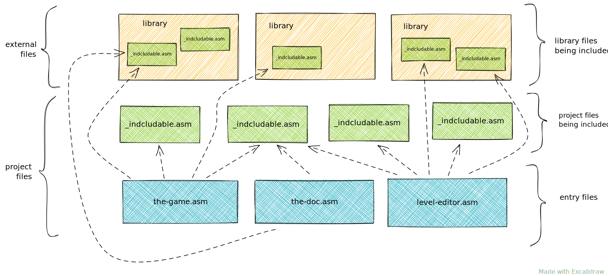

| This document is under development! |
This is initial concept paper of Retro Build Tool - an automation device to build various 8-bit targeted assembly projects.
1. Overview
1.1. Retro assembler project model
The source model of any retro assembler (MOS 6502 based) project is very simplified. There is no interim form of compilation process and there is no linker. The only means to reuse shared code is to use import directive therefore for the project it is sufficient to know all entry point files and assembly them one by one into executables (i.e. PRG files). All internal dependencies are specified within source files. All external dependencies must be handled externally (via retro assembler build tool).

There are other kind of files kept in the project:
-
data files of Charpad or similar software for developing tiled-based backgrounds,
-
data files of Spritepad or similar software for developing sprites,
-
source files of GoatTracker for SID music sources,
-
plain images in any format to be displayed.
All these files should be kept in source form and then convert via processors to embeddable form (i.e. binary). It should be possible to compress binary form if needed, i.e. via Exomizer.

2. Processes
2.1. Simple assembling process
In its simplest form we take a single asm file (an entry file) and compile it with Assembler (i.e. with KickAssembler) to get an output file (in this case this is an executable prg file).
There can be plenty of additional files that are included implicitly to the entry file via import directive.
For these "includes" files no separate output files are generated.

2.2. Resolving external dependencies
Include files can be delivered as external dependencies.
In this case these dependencies must be resolved before assembling.
Resolving usually means: downloading them into some volatile place to enable contained asm files to be included by project sources.
2.3. Converting resource files into assembly
Third party software can be used to produce meaningful resources such as graphical or musical data.
These resources require further processing in order to be embedded into the assembly program.
Dedicated processors can be used to accomplish this conversion task.
These processors produce asm files that can be included into the main program.
Alternatively, processors can produce binary data that can also be embedded into assembly as data blocks.
3. Requirements
3.1. System Requirements
3.1.1. Java Runtime
The Build Tool requires Java 11 or higher to run. It is compatible with all operating systems that support Java (Windows, macOS, Linux).
3.2. External Dependencies
Gradle Retro Assembler Plugin depends on several external native tools that must be installed and available on the system PATH.
These tools are used by various processors to perform specialized tasks.
3.2.1. Required for Assembly
KickAssembler
KickAssembler is the primary assembler dialect supported by the plugin. It must be downloaded and installed. The plugin can automatically download and manage KickAssembler versions.
- Version
-
5.25 or higher (recommended)
- Installation
-
Automatic via plugin (recommended) or manual download from https://www.kickassembler.com/
3.2.2. Optional for Processors
The following tools are only required if you use the corresponding processors:
VICE Emulator
Required for running KickAssembler-based unit tests using the 64spec framework.
- Version
-
3.7 or higher
- Installation
-
Available at https://vice-emu.sourceforge.io/
- Environment
-
Must be available on system
PATHasx64scorx64command
Exomizer
A file cruncher/packer that can be integrated into build pipelines.
- Version
-
Latest stable recommended
- Installation
-
Available at https://github.com/Kroc/exomizer
- Usage
-
Used with
commandStepin Pipeline DSL or custom build scripts
GoatTracker 2
Music editor and SID file generator for Commodore 64 sound compositions.
- Version
-
2.x (latest recommended)
- Installation
-
Available at https://www.jammer2000.co.uk/goat/
- Environment
-
gt2reloccommand must be available on systemPATH - Dependencies
-
Required for GoatTracker processor (both traditional preprocessor and Pipeline DSL)
- Features
-
-
Convert Goat Tracker SNG format to SID format
-
Support for SFX, buffered writes, and various optimizations
-
Embeddable in assembly programs
-
|
GoatTracker processor support is experimental in version 1.8.0. The syntax and behavior may change in future releases. |
3.3. Resource Processors
These processors are intended for asset management and transformation.
3.3.1. Charpad Converter
Converts CharPad project files (CTM format) into binary and assembly outputs:
-
charset data (character definitions),
-
charset attributes, colours, and screen colours,
-
tile sets and tile-related data,
-
maps and map sections,
-
CTM file metadata in assembly format.
- Supported CTM Versions
-
5, 6, 7, 8, 9
3.3.2. Spritepad Converter
Converts SpritePad project files (SPD format) into sprite binary data:
-
sprite definitions (up to 64 bytes per sprite),
-
sprite attributes.
- Supported SPD Versions
-
4, 5
|
Animation and color export are not currently supported. |
3.3.3. GoatTracker Converter
|
Experimental feature in version 1.8.0. |
Converts GoatTracker SNG music files into embeddable SID format:
-
SID music data with configurable optimizations,
-
optional sound effects support,
-
optional zero page buffering for enhanced quality.
3.3.4. Image Converter
Processes standard image formats (PNG, etc.) into binary data suitable for C64 programs.
3.3.5. Generic Processors
These processors can be used at any stage of the build process.
Cruncher/Packer
Data compression processors such as Exomizer that reduce program size.
3.4. CI/CD Requirements
For continuous integration environments (CircleCI, TravisCI), additional tools may be available:
3.4.1. CircleCI
The official Docker image maciejmalecki/c64libci:0.1.7 includes:
-
Java 11+
-
Gradle
-
KickAssembler
-
VICE 3.x
-
GoatTracker 2
-
Exomizer
No additional setup required when using this image.
4. Architecture
This tool is following a hexagonal architecture principle that is depicted on the following picture.